| 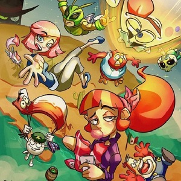 | México en la animación |
La historia de la animación en México esconde un universo lleno de relatos, anécdotas y descubrimientos. Sin embargo, hablar de animación en un país tan lleno de folclor y una cultura tan enriquecedora, no implica únicamente hablar sobre ciertos lanzamientos que marcaron la historia del cine mexicano, sino también acerca de sus autores, historietistas y directores que dejaron una huella imborrable en la industria de la cinematografía. A continuación te compartimos algunos estudios que ponen en alto el nombre de México, y que son reconocidos a nivel mundial. |
| 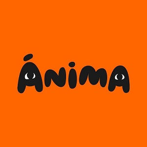 | 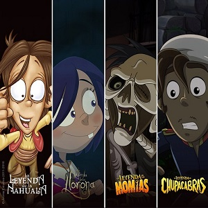 | Ánima Estudios es una empresa de animación mexicana, creada en el año 2002 por Fernando de Fuentes S. y José C. García de Letona. Líder en animación, con oficinas en la Ciudad de México, Madrid e Islas Canarias se especializa en animación 2D y CGI, creando, produciendo y gestionando marcas de alta calidad, así como desarrollando contenido original enfocado a los niños y a las familias. Dentro de sus proyectos más recientes están las series “Las Leyendas, una serie original de Netflix”, “Cleo & Cuquin”, “PINY Institute of New York”, además de la serie animada "El Chavo Del 8" y los largometrajes “La Leyenda del Charro Negro”, “Ana y Bruno” y “Ahí viene Cascarrabias”. |
| 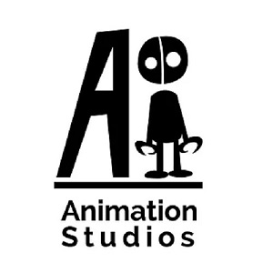 | 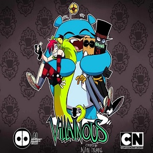 | AI animation studios, establecida en el año 2015, es una compañía mexicana productora de entretenimiento animado. El estudio de animación de AI es responsable de la serie de televisión “Villanos” de Cartoon Network Latinoamerica. Es un estudio cinematográfico de animación, con sede en la ciudad de México, siempre buscando generar contenido de la mejor calidad combinando la magia de la narrativa con la magia de la animación |
| 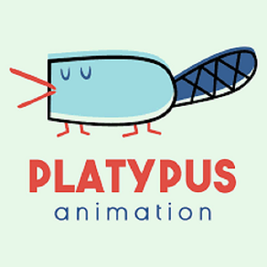 | 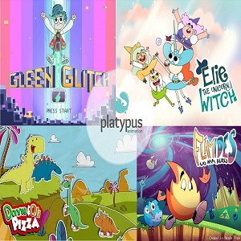 | Platypus Animation. En este estudio se especializan en crear producciones originales y bajo encargo. Ofrecen servicios de animación, ilustración, desarrollo de storyboards y animatics para cine y televisión. Quizás no han realizado un largometraje súper popular, pero sí trabajan de la mano con estudios grandes como Disney, Turner (o sea, Cartoon Network) y Discovery Kids, desarrollando pequeñas animaciones para las redes sociales, como este ‘Remix de Up’ publicado en el canal de YouTube de Pixar. |
| 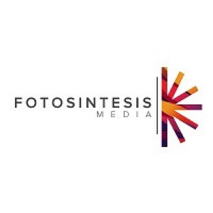 | 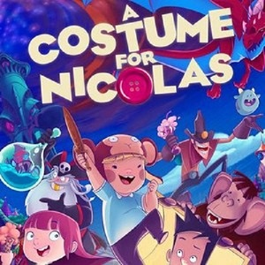 | Fotosintesis Media. Este estudio mexicano ha demostrado que la animación mexicana cabe en donde sea. A principios de año revelaron que participaron en la creación del video musical de Sia, para la canción "Hey Boy". Además, en Disney Plus puedes encontrar su película "Un disfraz para Nicolás", título que fue elegido para proyectarse en la plataforma de streaming dentro del marco del Día Internacional del Síndrome de Down. |
| 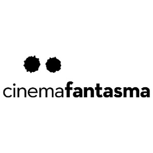 | 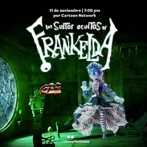 | Cinema Fantasma es un estudio de animación, cine y arte con sede en Ciudad de México. Fue fundando en el año 2011 por los hermanos Arturo y Roy Ambriz con un grupo de amigos y familiares. Se especializa en la animación en stop motion y su primera serie realizada mediante esta técnica es Sustos ocultos de Frankelda. Este equipo de fantasmagóricos animadores cuenta con la bendición de nada más y nada menos que Guillermito del Toro, quien los catalogó como "un grupo ejemplar". |
| 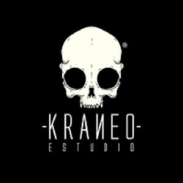 | 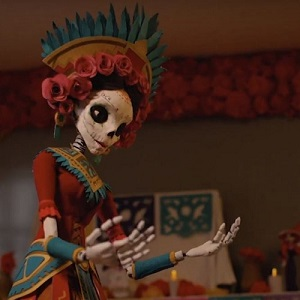 | De Puebla para el mundo. Kraneo estudio -con sede en dicho estado- está rompiendo fronteras al ser nominados por segunda ocasión a los Premios Quirino de la Animación Iberoamericana, una ceremonia que reconoce el talento de países latinoamericanos junto con el de otros países europeos como Portugal y España. Fueron nominados a la categoría de “mejor obra por encargo” con el cortometraje "Día de muertos", el cual realizaron para una campaña de Televisa a finales del 2020. |
| 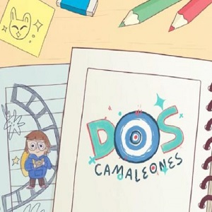 | Casiopea es un estudio mexicano fundado en 2013 por Alexandra Castellanos, Ana Cruz, Andrea Mondragón, y Sandra Medina. Pura mujer talentosa cuyo principal objetivo es el desarrollo de contenido cultural. Tienen un estilo propio que las ha llevado a producir cortometrajes premiados, así como colaboraciones con estudios internacionales. ha generado contenido de animación, ilustración y diseño para proyectos culturales, sociales, educativos y publicitarios al igual que cortometrajes independientes y videoclip. |